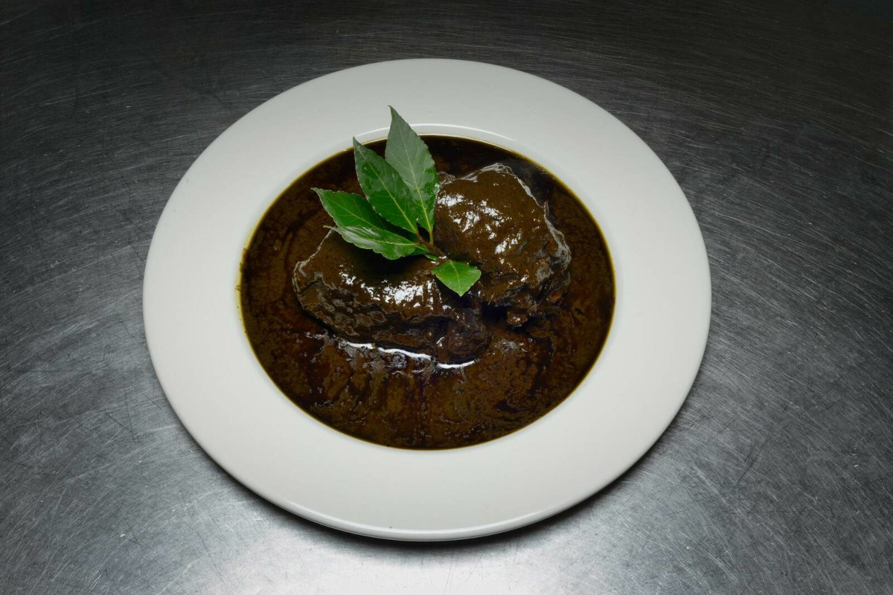

mloukhia

- Tunisian mloukhia Recipe
-
Ingredients:
1 packet of mloukhia (100g)
neutral cooking oil
3-4 bay leaves
1.25 lamb shoulder chop (bone-in)
2 tablespoons tabil
1 tsp caraway
1-2 tbsp homemade harissa (harissa arabi) and/or 1 tbsp tomato paste
3 garlic cloves
Preparation
Take the packet of mloukhia and place the contents in a large cooking pot on the stove.
Add about 2 cups of neutral cooking oil. Mix and stir to get the lumps out.
Then add about 2 liters of hot/boiling water but leave room at the top of the pot.
Bring to a boil on med/high heat. Add bay leaves, then turn down pot to a low simmer and cover
for about 2 hours.
Meanwhile:
Prepare the meat. (You can also do this the night before.) In a small bowl, mix tabil, caraway,
harissa/tomato paste, ground pepper, and a pinch of salt.
Then mash the garlic cloves to a paste in a mortar and pestle (or finely chop with a knife)
and add to the other spices. Place lamb in a larger bowl and rub the spice mixture into the meat
with a spoon. Cover and refrigerate (you can prepare this the day ahead and refrigerate overnight).
After two hours, turn mloukhia pot back up and let it boil, then add the lamb in.
Let it boil for a bit then turn down heat and let it simmer on low (for ~1.5-2 hours).
At this point, the meat should be tender and starting to fall off the bone. The minute the water
hits the mloukhia, it has a slimy consistency. The only way to get rid of this is to let it
cook for a long time. (Total cooking time: ~3.5-5 hours) Serve with baguette and enjoy!